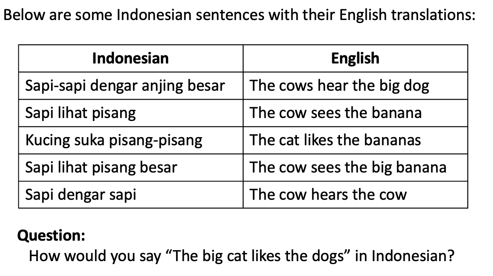

How to Review Linguistic Problems
The process of reviewing a problem submission has 4 main steps (not necessarily done in this order):
- Perform a linguist review, which establishes that all data used in the problem are accurate
- Write a solution path, which establishes that the problem is solvable and has exactly one solution
- If the problem has any issues that prevent the above two steps from being completed, revise the problem so that it is accurate and solvable
- (Optional) Revise the problem in ways that make it more fun or engaging
Thus, your job is not only to review the problem but also to revise it to fix any problems that you find when reviewing it. However, in some cases you might decide that a problem has unfixable flaws, or that its flaws would require too much work to fix; in such cases, you would not produce a revised version of the problem but instead write down the reasons for why the problem is not worth pursuing any further.
Below we provide guidance on how to carry out each of these steps. We know that this document is long, but please read it in its entirety; the information here is important for ensuring that you are reviewing problems in the most effective manner.
One point to reiterate: You do not need to carry out these steps in the order they are listed above. In practice, you are likely to end up doing all four of them roughly simultaneously. That's fine—the goal is just to end up with everything that we need (namely, a usable problem, a linguist review, and a solution path), and it doesn't matter what path you took to get there.
Performing the linguist review
NACLO problems usually include linguistic data, such as words or sentences in the language that the problem focuses on. It is important for the data to be accurate. If there are mistakes, that’s an issue for several reasons: it can be disrespectful to the speakers of the language, it can mislead people solving the problem, and it can hurt NACLO's image.
Therefore, one of your roles when vetting the problem is to check the accuracy of the data. There are several ways that we can satisfy ourselves that the data are accurate:
- Author expertise: If the author is a native speaker of the language, or a linguist who is an expert in the language, then we can ask them “Are you confident that all the examples in the problem are accurate?” If they say yes, that is sufficient verification.
- Verification with a reliable source: If every example in the problem appears in its entirety in a reputable source, then we can also be confident in the accuracy of the problem.
- Careful analysis of the rules of the language: Often, problem authors do not use the exact examples that appear in sources. Instead, they will generate new examples (e.g., they might read the grammar rules described in a scholarly source and then apply them to produce a new example). This is completely fine to do, but it can also be error-prone. Therefore, if the author has done this, we need to carefully check all of their examples by looking into the relevant sources and making sure that the examples are consistent with the source.
- Verification with a native speaker: If we are not certain of the sources, it can be very productive to consult with a native speaker of the language, since native speakers are the ultimate authority. However, when we do this, it is important to be courteous in our interactions with native speakers - so before reaching out to any native speakers, please consult with the rest of the PC first.
Whichever of these situations applies, you should write down your conclusions about the accuracy of the data in the "pc_comments" document associated with the problem. Depending on which scenario applies, this could be very brief or very lengthy. Specifically, if Situation 1 or Situation 4 applies, you can merely state something like "[INSERT NAME] is a linguist who is an expert in the language, and they have verified the accuracy of the data." However, if Situation 2 applies, you should state which source(s) you used and where each example appears; e.g., ""All of the examples are taken directly from BOOKTITLE. Specifically, they are example 17 on page 93, example 2 on page 111, example 45 on page 113, and examples 1 through 7 on page 248." And if Situation 3 applies, you should specify which source(s) you used, which rules/data you took from those sources, and where those rules/data appeared; e.g., "The problem is based on a grammatical phenomenon described on pages 93 to 95 of BOOKTITLE. Several of the examples are taken from that passage (specifically, examples 1 through 5 in the problem correspond to sentences 3 to 7 on page 94 of the book). To round out the problem, I constructed six additional examples by applying the rules on pages 95 and 113 to vocabulary items from TITLE OF DICTIONARY. I simplified the rules slightly by ignoring the intervocalic voicing rule described at the bottom of page 95."
Here are some additional clarifications:
- When you are first reviewing a problem submission, it may not be worth it to dive into the details of every example. This is because the problem often changes a lot throughout the editing process: in addition to checking the accuracy of the data, we also try to make the problem more engaging and to ensure that it is solvable. This means that the specific set of examples might change substantially, so you might waste your time by focusing too much on the specific data in the initial version. One strategy that can be effective is the following:
- Start by checking the accuracy of the main phenomena that the problem is about. That is, determine which linguistic rules need to be figured out to solve the problem, and then confirm that those linguistic rules truly are part of the language.
- Then, move on to the other parts of the editing process (making the problem more engaging and ensuring solvability).
- Then, once the basic structure of the problem is decided, come back and check all the details of the specific examples.
- Sometimes, we simplify a pattern slightly for the purposes of the problem (e.g., there might be a word that is an exception but that we end up treating with the regular rule—like saying that the past tense of the English word “run” is “runned”). It is okay to do this, as long as we acknowledge it. Therefore, we need to be aware of whether the problem makes any simplifications so that, if it does, we can say so in the intro to the problem.
- Often, factual errors in problems can be fixed (e.g., by changing the vocabulary used in the problem). So, if/when you find errors, think about whether you can see a way to address them. But sometimes the errors can’t be fixed, and that’s okay - if the problem gets too many things wrong, or is wrong in a very fundamental way, that is a very valid reason to reject the problem.
- If you are in Situation 3 as listed above, proceed with care. When authors create new examples on their own, there is a lot of opportunity for errors to creep in. Here is a hypothetical example:
- The source material might include the sentence “Jiraf llamma wach”, meaning “The giraffe watches the llama.”
- The problem author might decide that they want a new example with the subject and object switched, leading them to generate “Llamma jiraf wach.”
- However, in many languages you cannot automatically swap the subject and direct object like that. The forms of the noun might change depending on the role they play in the sentence; maybe the correct form would be “Llama jiraff wach.” Or, the verb might take a different form depending on what the subject is; maybe the correct form is “Llamma jiraf waach.”
- So, even if the problem is intended to be about syntax, the process of checking newly-created examples might involve thinking about other parts of the language too (such as morphology or phonology).
- What counts as a reputable source? Generally speaking, if something was written by an expert in the language, it counts as a reputable source for purposes of dealing with Situation 2 or Situation 3. An expert in the language could be a native speaker of the language and/or a linguist studying the language and/or an educator teaching the language professionally. Wikipedia does not count as a reputable source for our purposes; it is often accurate, but not always, so rather than trusting Wikipedia you should track down the sources that Wikipedia used. Also, language trivia websites that gather together fun language data do not count as reliable (e.g., Omniglot). For both Wikipedia and Omniglot, the issue is that the person who wrote the material might not be an expert in the language in question and might therefore copy information incorrectly from other sources. If you're not sure whether a source is reliable enough, please check with other members of the PC!
- Does every problem need a linguist review? Every problem needs to be verified by someone who is an expert in the data used in that problem. Some problems (especially some computational problems) use only English data, meaning that any PC member who is fluent in English can verify the accuracy of the data without needing other sources. Note, however, that problems involving computational concepts should be checked by someone who is familiar with those computational concepts in order to ensure that it presents those concepts accurately.
- Where can I find sources? Sometimes the author lists their source(s) in the problem submission. If not, you can reach out to them to ask them for their sources. If you can't get in touch with them, then you may need to Google around, or ask the rest of the PC for help finding relevant sources. If we simply cannot track down sufficient sources to support the problem, we may need to reject it.
- If you are uncertain about anything (e.g., if you are struggling to understand the source material, or if you can’t get access to the source material), that’s no problem - just message the rest of the Program Committee on Slack!
Whatever you end up concluding from your linguist review, make sure to write it in the "pc_comments" document associated with the problem, so that no one else needs to duplicate the work you have done!
Writing a solution path
One requirement for each problem that we release is that it must have one and only one solution. The purpose of a solution path is to verify that this is the case.
The solution path is like a proof that starts with the provided data and uses it to establish the solution to the problem, step by step. As a simple example, consider this problem:

A solution path for this problem might look as follows:
- In Indonesian, Sentences 2, 4, and 5 all start with "sapi." The only words that all of them share in their English translations are "the" and "cow", so "sapi" must mean "the" or "cow." But it can't mean "the" because Sentences 1 and 3 have "the" but not "sapi", plus Sentences 2 and 4 both have "the" twice but "sapi" only once. Thus, "sapi" must mean "cow." An additional piece of evidence for this is that Sentence 5 has "sapi" twice and "cow" twice.
- Looking at the rest of Sentence 5, the only Indonesian word left unaccounted for is "dengar." That must therefore mean either "hears" or "the", which are the only unaccounted-for English words. But it can't mean "the" since we would need two copies of it to match the two copies of "the"; thus, "dengar" must mean "hear" (which matches the fact that it also appears in Sentence 1). We can also conclude that Indonesian doesn't use any word to correspond to "the" in English, since we have now accounted for all words in Sentence 5, and none of them are "the".
- If we compare sentences 2 and 4, they are the same in Indonesian except for "besar", and the same in English except for "big". Thus, we can conclude that "besar" = "big".
- Now let's look at Sentence 1. We know that "dengar" = "hear" and "besar" = "big". The remaining words are "sapi-sapi" and "anjing", one of which must mean "cows" and one of which must mean "dog." But which is which? Well, "sapi" means "cow", so it seems plausible that "sapi-sapi" would mean "cows"; also, since "dog" is modified by "big", it would make sense for it to be next to "big". Thus, we can conclude "sapi-sapi" = "cows" and "anjing" = "dog". Based on "sapi-sapi", we can also conclude that Indonesian makes a word plural by repeating it twice.
- Building on this plural observation, we can look at Sentences 2 through 4: Sentence 2 and Sentence 4 contain "banana" (singular), while Sentence 3 contains "bananas" (plural). The Indonesian word for "banana" would then likely be whatever word appears a single time in Sentence 2 and Sentence 4 but doubled in Sentence 3—i.e., "pisang."
- In Sentences 2 and 4, we've now figured out every word except "lihat"; "lihat" must then mean "see", since that's the only word left to explain.
- The only words left to sort out are "kucing" and "suka" in Sentence 3. Which is "cat", and which is "likes"? Well, in the other 4 sentences, we always have subject-verb-object word order. Thus, we can assume that this extends to this sentence, giving "kucing" = "cat", and "suka" = likes.
- We should also take a moment to note a couple of other things, now that we have sorted out the word identities: First, the adjective comes after the noun, as shown in Sentences 1 and 4. Second, the verb seems to take the same form whether the subject is singular or plural, as shown by looking at "dengar" in Sentences 1 and 5.
- We can now answer the question. We know that the word order is subject-verb-object. The subject is "the big cat"; we can omit "the", the word for "big" is "besar", the word for "cat" is "kucing", and adjectives go after nouns, making the subject "kucing besar." The verb is "likes", which is "suka". And the object is "dogs"; we know that "dog" is "anjing," and we double it to make it plural, giving "anjing-anjing". Putting it all together, the answer is "Kucing besar suka anjing-anjing."
There are a couple of points to note about the solution path:
- It might be longer or more involved than the process of solving the problem during the contest. When a solver is solving during the contest, they are allowed to make leaps of intuition. For example, they can say "let me see if it works to assume that the word order is subject-verb-object; yes, that does work, so I therefore know this is the word order!" However, when writing a solution path, you can't make arbitrary assumptions like that; it's not enough to show that the problem works with subject-verb-object word order—you additionally need to establish that it does not work with any other word order (as we did in the solution path above by first using logic to figure out the meanings of individual words and then deriving the word order from that).
- ...but it is ok for the solution path to involve some assumptions; it doesn't have to be purely logical. For example, in the solution path above, we assumed that Sentence 3 uses the same word order (subject-verb-object) as the other sentences. This assumption could be wrong, so it's not purely logical, but it's such a reasonable assumption that there's no problem in requiring this assumption in order to make the problem solvable. The crucial point is just that any assumptions that are involved in the solution path must be reasonable, non-arbitrary ones; e.g., it's ok to assume "all sentences use the same word order unless we see evidence to the contrary", but it's not ok to assume "the word order must be subject-verb-object." If you aren't sure whether an assumption is reasonable or not, you can discuss it with the rest of the PC!
Note that it can be acceptable for a problem to have multiple solutions in some cases; e.g., maybe the language has multiple ways to express something, meaning that there may legitimately be multiple ways to translate an English sentence into the language of focus. In that case, the problem should say something like "there may be multiple translations; you only need to provide one."
If it would be helpful to see more examples of solution paths, feel free to ask Tom! When you make a solution path, make sure to add it to the "pc_comments" document associated with the problem. (Or, if it gets very long, you can also create a new document for it in the Google Drive folder associated with the problem).
In addition to checking the accuracy of the data and the solvability of the problem, there are a few more factors to look out for. If the problem includes any of the following, it may need to be revised to avoid the issue, or it may need to be rejected if the issue cannot be avoided. A reason to be aware of these points is that some of them can require substantial revisions; for example, if you need to replace some of the vocabulary in the problem, the replacements might change the problem's logic, therefore requiring you to redo the solution path:
- Avoid inappropriate vocabulary: We get some participants who are fairly young. Therefore, we need to avoid any terms relating to violence, alcohol, serious disease, or other topics that might be inappropriate for children. If the problem involves such vocabulary, it will likely need to be revised (e.g., by replacing those words with other words).
- Avoiding languages that are too well-known: NACLO problems are meant to involve figuring out something about a language you haven’t encountered before, rather than testing your prior knowledge of languages that you speak. Therefore, NACLO problems should not focus on languages that are likely to be spoken by many participants in the contest. This includes languages that are spoken in many households in the US and Canada (e.g., Spanish or Mandarin) as well as languages that are commonly studied in high school (e.g., Latin). If the language is too well-known, we may need to reject the problem (meaning that it is not worth it for you to prepare the linguist review and solution path).
- Avoiding phenomena that we have used before: If the specific language and phenomenon featured in a problem have been previously used in our contest, then we probably cannot use it again. If you're not familiar with all past NACLO problems (there are a lot of them, so not many people are!), you can do a quick check by Googling for "NACLO" plus the language name. Some repetition is fine; e.g., we can reuse a language as long as the two problems focus on different phenomena within that language.
- Avoid reliance on background knowledge: NACLO problems should not require any prior knowledge about linguistics or computer science. E.g., if the problem illustrates a phonological process that turns /b/ to /p/ and that turns /d/ to /t/, we cannot expect students to generalize this to turning /g/ into /k/ because that generalization requires knowledge of phonology. This type of issue can often be addressed by providing the relevant information in the intro to the problem (e.g., providing partial IPA charts). In addition, problems should not depend on world knowledge, unless the world knowledge is something that any high school student can be expected to know; e.g., we cannot expect them to know the names of all the countries in the world, or to be familiar with properties of fruits besides ones that are extremely common (e.g., we can't expect them to know what color a papaya is). Such world knowledge can often be supplied in the intro to a problem (e.g., stating "a papaya is a fruit with orange flesh and black seeds").
Revising the problem to overcome flaws
If the problem has any flaws, part of your job is to revise it so in order to overcome those flaws. Specifically, if there are any flaws that make the data inaccurate (as revealed by the linguist review) or that lead to multiple possible solutions (as revealed by the fact that you cannot create a solution path), then these issues need to be fixed.
There is no specific formula to follow for how to fix flaws in a problem; figuring out how to do it is often like solving a puzzle in its own right! Here are some strategies that can often be effective:
- Issues with data accuracy can often be overcome by using new examples (e.g., finding more data from the source).
- If there are multiple solutions, that can often be overcome by adding another example that disambiguates the solutions.
In some cases, it may be impossible to overcome the problem's flaws. For example, maybe we really need more examples, but the literature just doesn't contain any suitable examples. In those cases, we will have to reject the problem—which is too bad, but does happen sometimes.
Revising the problem to make it more fun or engaging
One of our goals is to make our problems engaging; we want solvers to come away from the contest feeling happy and excited about linguistics. To help with this goal, as you think about the problem, think about whether it is currently enjoyable, and about whether there is anything you can do to make it enjoyable (or more enjoyable, if it is already enjoyable!)
As in the previous section, there is no single formula for how to do this, but here are some ways that you can try to make a problem more engaging:
- You could present the data within an intriguing framing, such as playing a game, cracking a code, deciphering a menu, interpreting an actual piece of literature, or figuring out why a machine is breaking.
- You could incorporate or highlight phenomena that students will find surprising and interesting, such as pronoun systems based on different features than English pronouns or word orders that differ markedly from English word order.
- You could add visual appeal by incorporating engaging images such as maps, non-Roman writing systems, intriguing diagrams, or even clipart images that are not integral to the problem but that still make it more inviting.
- You could include a twist that makes it more like a puzzle and less like a homework problem, such as the famous "one of the fishermen is lying" twist, or a twist involving a single word with multiple English translations.
- You could connect the problem to something students themselves can relate to—e.g., writing computational problems that connect to language technology that students use.
- You could incorporate humor, such as entertaining narratives, amusing mistakes made by a hypothetical robot, or jokes based on garden-path sentences.
General guidelines
Beyond the procedures outlined above, here are a few more important points to keep in mind:
- Try to see a problem not as it is but as it could be. Part of our job is to revise problems to make it better. The problem in its current form might be unsolveable or formatted in an unpleasant way, but such problems can often be overcome. Thus, the question you should be asking is not, "Is this a good problem?" Instead, you should ask, "Can this become a good problem with a not-too-ridiculous amount of work?" By viewing problem submissions in the most positive light possible, we make sure that we recognize the best ideas even if those ideas are not yet executed perfectly. Doing so is important for supporting new problem authors, whose submissions often have excellent potential but without the polish that we expect in finalized problems, making it important for you to avoid fixating on the lack of polish.
- We can discuss ideas in Zoom meetings. The committee will be having occasional Zoom meetings. That can be a great time to brainstorm about any topics that might benefit from the input of multiple people—e.g., how can we revise this problem to be more engaging? How can we revise the problem to rule out an unintentional alternative solution? Is the language used in the problem too well-known?
- Be respectful! Any comments that you write about problems should be phrased respectfully and constructively. It is fine—and often necessary—to write down criticisms, but any criticisms that you make should be presented in a charitable way. Many problem authors are also members of the PC, so they might read your comments. If the comments are hurtful, that might give the author a bad experience, which is a problem in its own right (because we want everyone to enjoy their experience with NACLO) and may also discourage them from submitting again. For example, instead of saying "This problem is mind-numbingly dull", you can say, "The problem would benefit from adding something that can make it more engaging." Or instead of saying, "I found this problem to be excruciatingly painful to solve", you can provide more specific feedback about what you didn't like and how it could be addressed: "It was not clear what we were expected to do, which reduced my enjoyment in solving the problem. There were also a lot of questions which made it hard for me to maintain my excitement about the problem; it might make sense to reduce the number of problems." Above all, make sure that any criticisms you make are stated as being about the problem, not about the person who wrote the problem.
- You are not in this alone! You are part of a committee. If you get stuck at any point, please reach out to this committee. Others may well be able to get you unstuck—and if not, they can at least commiserate with you about how tricky the issue is!